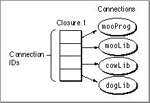
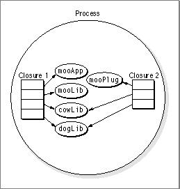

Closures
The Code Fragment Manager uses the concept of a closure when handling fragments. A closure is essentially a set of connection IDs that are grouped according to the order they are prepared. The connections represented by a closure are the root fragment, which is the initial fragment the Code Fragment Manager is called to prepare, and any import libraries the root fragment requires to resolve its symbol references.During the fragment preparation process, the Code Fragment Manager automatically prepares all the connections required to make up a closure. This process occurs whether the Code Fragment Manager is called by the system (application launch) or programmatically from your code (for example, when preparing a plug-in).
Figure 1-1 shows a set of connections that make up a closure.

Each closure is assigned a closure ID.
A fragment may be used in more than one process, but a separate connection is created for each process. For example, if two applications require the standard C library, a separate connection is created for each one.
Connections may be shared among closures within a process if your application calls the Code Fragment Manager to prepare a plug-in. Figure 1-2 shows the closure of an application and a closure of a plug-in sharing a fragment within a process.
Figure 1-2 Multiple closures in a process

The Code Fragment Manager does not create new connections when sharing a fragment within a process but uses the ones that are currently available. Therefore it is possible for separate closures in the same process to refer to a fragment by the same connection ID. Connections are not shared across processes, however, so new connections (and connection IDs) are created when a fragment appears in another process.
Subtopics
- Code and Data Sections
- Reference Counts
- Using Code Fragment Manager Options